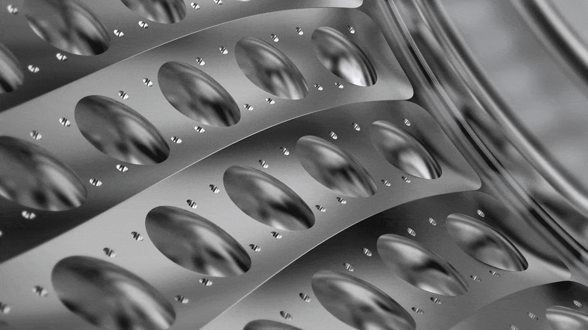
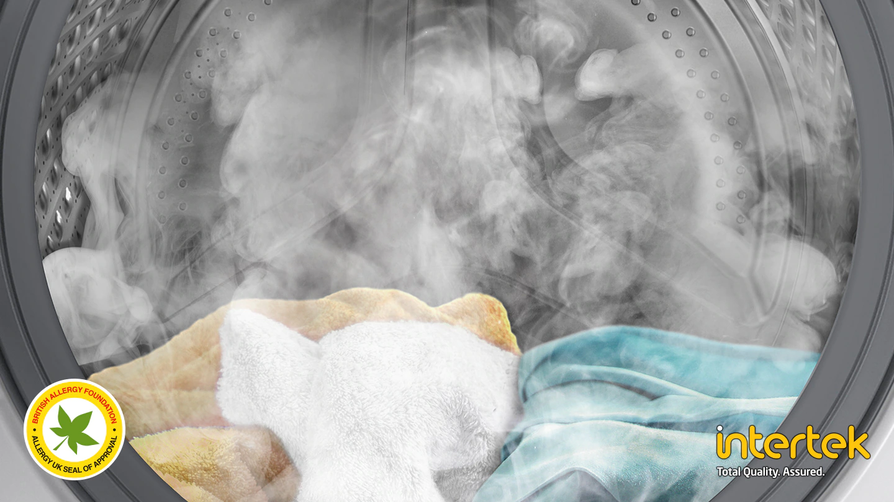

Bule puternice
Tehnologia Eco Bubble ™ asigură o spălare temeinică, chiar și la temperaturi scăzute *. Detergentul pentru rufe formează bule, permițându-i să pătrundă rapid în țesături și să îndepărteze cu ușurință murdăria, protejând în același timp țesăturile și economisind energie. **

* Testat pe IEC 60456-2010 @ 4kg sarcină, Ultra Eco Cold (WF80FUNU4W) versus bumbac 40 ° C fără Eco Bubble (WF0702WKU). Rezultatele individuale pot varia. ** Pe baza unui raport de testare a performanței de laborator realizat de Springboard Engineering, care a investigat efectul soluției de detergent convenționale și a tehnologiei cu bule fără acțiune mecanică asupra benzilor EMPA.
Spălare în 39 de minute
Programul Super Speed vă permite să vă spălați rufele zilnice în doar 39 de minute. Tehnologia QuickDrive ™ scurtează timpul de spălare prin mutarea dinamică a articolelor de îmbrăcăminte, în timp ce Eco Bubble ™ oferă o curățare puternică. Timpii de clătire sunt, de asemenea, scurtați cu modelele Speed Spray și Swirl + Pattern * Drum, precum și viteza de clătire crescută.

* Testat pe † Swirl + Pattern † Mașină de spălat tambur în comparație cu Samsung Swirl Drum folosind date de testare interne
Îndepărtarea intensă a petelor
Tehnologia Bubble Soak elimină o varietate de pete încăpățânate la simpla atingere a unui buton. Hainele sunt bine îmbibate în bule active, astfel încât murdăria și petele sunt distruse și îndepărtate mult mai eficient *.

* Testat conform IEC 60456 ediția a 5-a cu o sarcină de 8 kg și folosind spălare Bubble Soak (WF80F5EU4) comparativ cu bumbacul 40/60 °, materialele sintetice 60 ° și denimul la 40 ° fără tehnologia Bubble Soak (WF0702WKU).
Fiabilitate și performanță
Tehnologia Digital Inverter folosește magneți puternici în motor pentru a asigura o funcționare mai silențioasă și mai eficientă, în timp ce utilizează mai puțină energie decât motoarele universale. Eliminarea periilor în mișcare asigură o durabilitate excepțională * susținută de o garanție de 10 ani **.

* Produsul a primit certificarea Verband Deutscher Elektrotechniker (VDE) timp de 23 de ani.
Performanță de lungă durată
Ceramic Heater + are un nou tip de acoperire de eliberare, care reduce acumularea de scări comparativ cu încălzitoarele ceramice convenționale *. Designul său patentat ** reduce acumularea de scări pentru a preveni conducerea. Ca urmare, elementul de încălzire își păstrează eficiența pentru o perioadă mai lungă de timp și are o rezistență crescută.

* Testat cu Ceramic Heater + comparativ cu mașina de spălat convențională Samsung WF60F4E0N0W / ET. Rezultatele testelor se bazează pe verificarea independentă a schimbării greutății încălzitorului în apa dură. * Numărul cererii de brevet: 10-2012-0029920 în Coreea, China, Europa și Statele Unite.
Îndepărtarea bacteriilor și alergenilor
Spălare cu aburi
Curățare profundă cu abur. Spălarea cu abur îmbunătățește calitatea curățării hainelor fără pretratare. Aburul este introdus în tambur de jos, astfel încât hainele să fie complet saturate. Aburul elimină particulele de murdărie și 99,9% din bacterii și dezactivează alergenii *.

Diagnosticare inteligentă
Funcția Smart Check
Uitați de cheltuielile și inconvenientele suplimentare de rupere a mașinii. Smart Check este un sistem automat de monitorizare a mașinii care poate fi utilizat pe un smartphone folosind o aplicație dedicată *. Funcția detectează defecțiunile într-un stadiu incipient și oferă diagnosticare rapidă, oferind o soluție pentru eliminarea acestora. Acest lucru economisește timp și costuri pentru reparații **.

Protecție la supratensiune
Funcția de control al voltajului
Volt Control protejează aparatul de supratensiuni. Acesta detectează o creștere semnificativă a tensiunii de alimentare și oprește automat mașina. Acest lucru previne deteriorarea mașinii de spălat.